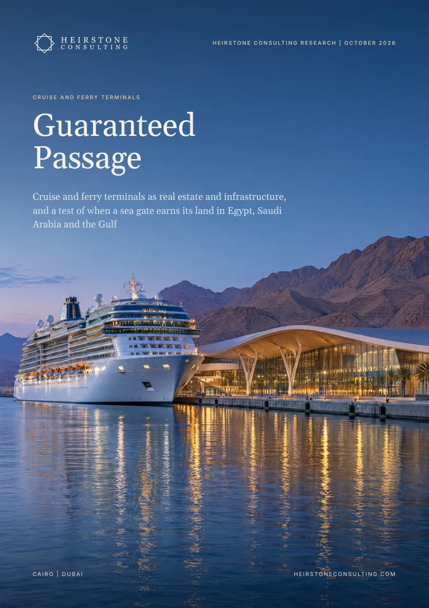

Special Projects
Cruise and ferry terminals as real estate and infrastructure, and a test of when a sea gate earns its land in Egypt, Saudi Arabia and the Gulf.

The report in six numbers
ferry passengers for every cruise passenger in EU ports in 2024: 417.8 million sea passengers in all, 17.9 million of them on cruises
what a homeport cruise passenger spends ashore in Europe compared with a transit passenger: €212.67 against €70.63
Royal Caribbean's 36-year terminal usage agreement at PortMiami, with 2.1 million passenger moves a year guaranteed from year 11
share of Galataport's targeted 25 million annual visitors who would be cruise passengers or crew
average passengers per cruise call in Egypt in 2023, against 2,236 across MedCruise member ports in 2025
annual growth implied by CLIA's outlook of 40 million cruise passengers by 2030, after a record 37.2 million in 2025
In brief
Port authorities in the Red Sea and the Gulf describe new terminals by annual capacity. The ports that have made terminals pay describe them by what is committed: passenger moves guaranteed by a cruise line, a terminal a line has paid for, or a ferry timetable that runs all year. Where nothing is committed, a sea gate's value lies in the land behind it, and the terminal is a public cost to be kept light and priced.
EU ports handled 417.8 million sea passengers in 2024, of whom 17.9 million were on cruises. Ferries need vehicle lanes and frequency; cruise needs hotel beds, flights and a hall that can clear a large ship in a morning.
In Europe a homeport passenger spends €212.67 ashore and a transit passenger €70.63. Barcelona and Piraeus handle 58 to 59% of their traffic as homeport movements, against a MedCruise average of 27%.
Royal Caribbean committed US$2.5 billion over 36 years for PortMiami's Terminal G, and MSC built its US$300 million terminal itself. On our analysis, Miami's line agreements pay the port about US$14 to US$36 per passenger move.
Galataport's own targets put cruise passengers and crew at 6% of its expected visitors, so the other 94% carry its business case. Helsinki built a district of more than 100 hectares beside its ferry harbour.
Barcelona is spending €185 million on a programme that cuts daily cruise capacity by 16%, and levies of €5 to €20 a head are now common in Europe. We found no published per-passenger cruise levy in Egypt, Saudi Arabia or the UAE.
Three Egyptian Red Sea terminals concessioned in 2024 have a stated capacity of 4.3 million passengers a year, while Egypt's six cruise ports handled 198,124 in 2023. Doha shows the alternative: 56 of its 87 calls in 2024/25 were full or partial turnarounds.
What it means
Build to committed traffic, sell turnarounds as contracts and publish daily caps and a levy before the first call.
Where nothing is committed, treat the land behind the quay as the asset and plan it in one scheme with the terminal.
Underwrite line guarantees, turnaround share and capture per passenger move, not stated capacity.
Inside the full report
Heirstone datasets
tests in the Heirstone Sea Gate Test: committed traffic, turnaround share, capture per move, land in play and load limits
types of sea gate, from the underwritten gate to the call stop, in the Heirstone Sea Gate Benchmark
Built from public sources current at October 2026. Every figure is referenced in the report, and figures we derive by combining published numbers are labelled Heirstone analysis.
When traffic is committed before construction, through a cruise line guarantee, line funding or a year-round ferry timetable. PortMiami's Terminal G is backed by a US$2.5 billion, 36-year usage agreement.
They spend about three times as much ashore: €212.67 against €70.63 in Europe, because they stay in hotels and fly in and out of the gateway city.
The region is adding capacity faster than commitments: three Egyptian Red Sea terminals have a stated capacity of 4.3 million passengers a year against 198,124 handled by Egypt's six cruise ports in 2023. Heirstone's Sea Gate Test sets five checks before investing.
Special Projects
Heirstone Consulting Research
Speak directly with a senior partner about your project, asset or programme.
Get in Touch